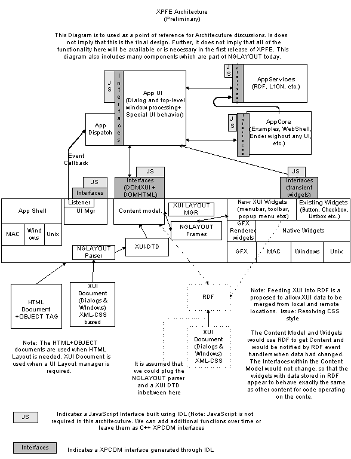

| Introduction
XPFE includes both core technology and a structure for applications.
The XPFE architecture allows the application's user-interface can be written
in a combination of C++ and JavaScript. Parts of the core application or
it's user-interface can be progressively exposed as JavaScript routines.
The core technology within XPFE includes existing widgets, new widgets
and integration within NGLAYOUT for reading and displaying documents describing
user interface for windows and dialogs.
The following description of a specific implementation will walk you
through the architecture and provide a general idea of how it works. Each
of the components in the diagram are describe in detail below.
Assume that there is a browser application built from XPFE, the application
flow would be as follows:
-
A new class is dervied from "AppShell" that contains the App UI.
-
The browser App UI is created and it contains a dispatch object is for
servicing all the GUI events
-
The App UI gets an instance of XUI Manager and asks it to load the initial
XUI document, this returns a XUI Main Window
-
The XUI document is parsed by the NGLayout parser with the XUI-DTD and
the XUI Content model is created
-
When the Main Window is shown the XUI manager talks to the XUI Content
model (frame model) and all the UI elements defined in the XUI document
are layed out
-
The App Shell registers it's dispatch object as a listener of the XUI Main
Window
-
All events are relayed to the dispatch object within the App Shell
-
The dispatch object calls methods on the App UI, the App UI then makes
additional calls on the App Core and App services for performing work

Figure #6 - The XPFE Architecture
XPFE Architecture Diagram
(Preliminary 10-22-98)
Design philosophy
The core design is based on a separation of the application user-interface
and the application core. In addition, dispatch code should be separated
from the application's user-interface.
App UI
The application user-interface contains code to display dialogs and
top-level windows. It also contains all of the code to process any events
comming from the dialogs or windows.
App Dispatch
The code to dispatch events to the Application's user interface is placed
in a separate module so that application dispatch can come from different
sources including JavaScript.
App Core
The application core provides an API that can be called from the Application
User-Interface. The core should not contain code to create or manage
MenuBars or Dialogs. In addition, it should not contain code to process
top-level windows and dialogs. This code should be placed in the App UI
instead. An example of an App Core is the WebWidget.
All of the code for performing direct manipulation should
be placed in the AppCore. An example of this is the WebWidget. The code
to process clicks on links and scrolling of the WebWidget should reside
in the AppCore. In the case of the "ender widget" all of the code to process
selection should be placed in the AppCore. Ifthe App UI needs information
from the AppCore such as "is there a current selection" so that it can
disable or enable a toobar button, this information should be provided
to the App UI either through method calls or event listeners. In addition
to direct manipulation, drag and drop processing should be included in
the App Core as well. For many applications it should be possible
to embedd the App Core in a page by specifying an object tag which has
a reference to the AppCore. If the AppCore needs additional UI then it
can be accomplished in two ways. The App Core can expose JavaScript
functions which allow a XUI/HTML with JavaScript event handlers make
calls into the AppCore. This allows the external interface ("i.e. non direct
manipulation) to be controlled by the page designer. An alternative is
to have the object tag refer to a combination of App UI and AppCore. The
AppUI in this case would not contain the full user-interface that a stand-alone
application would provide. This corresponds to what the "ender" widget
does today.
App Services
The application services include HT/RDF, I10N, and other modules which
will be used across applications.
UI Mgr
The User Interface Manager is responsible for creating dialogs and top
level windows. It also is reponsible for attaching an event listener to
the dialog or window.
Listener
The listener interface is used to dispatch events generated by windows
and dialog boxes. The events dispatched include high-level CLICK as well
as low level MOUSE_DOWN and MOUSE_UP events.
AppShell
The Application shell contains the startup code for each native platform.
It also contains the message pump. The Application UI is a sub-class of
the application shell.
XUI Document
The XUI Document is a XML-based grammer for describing the layout of
top-level windows and dialogs. It contains tags for specifying menubars,
toolbars, statusbars, and tree controls.
XUI Layout manager
The layout of the XUI elements is done using a XUI layout manager. It
is anticpated that the HTML Layout manager will not be sufficient to layout
menubars,toolbars, statusbars, and tree controls properly. Rather than
trying to add new behavior to the HTML Layout manager a new XUI Layout
Manager mantains the layout of XUI Content.
HTML + OBJECT Tag
In some cases it is desirable to have the new widgets layed out by the
HTML layout manager (Raptor). If this is the case, then the widget will
be specifyable through the OBJECT tag syntax in HTML. Tree widgets are
an example of a widget which you may want to layout both within a HTML
Table within a dialog or within the Top-level XUI described window. It
is expected that you should be able to insert a tree widget either within
XUI or using the OBJECT tag within HTML. We may decide to allow a XUI document
to be referenced through the OBJECT tag to so that a HTML document could
take advantage of the XUI Layout manager within a region of the HTML dialog
or window.
CSS
Stylistic information for XUI/HTML documents is stored in CSS rules.
Each of the XUI elements includes a classid and id attribute
so that it can be bound to style information provided by CSS. The id
attached to XUI elements within the XUI Document will also be used for
event dispatch to identify the widget.
Content Model
As the XUI Document is parsed XUI specific content is created. The Content
that is created implements the nsIHTMLContent interface so that XUI Content
can live in both the HTML Content area of the special XUI Content area.
DOMXUI + DOMHTML interfaces
The XUI Content is accessible through nsIDOMXUI Interfaces. These interfaces
are defined through IDL and compatible with the nsIDOMHTML Interfaces defined
for standard HTML elements. These interfaces provide programatic access
to the widgets from C++ and later JavaScript. The bulk of the App UI Code
will involve calls to these interfaces. Since the nsIDOMXUI Interfaces
are similar to the nsIDOMHTML interfaces it should make it easy for programmers
to migrate UI code that was written in C++ to JavaScript.
CSS Style interfaces
In addition to having access to the DOMXUI and DOMHTML interfaces, Application
UI developers will also have access to a CSS Style DOM. This DOM contains
API's for changing the style of the UI elements. This includes there colors
and icons, etc.
JavaScript (Security)
When JavaScript is introduced there are security concerns. A site containing
JavaScript could change your menu's so that your application no longer
functioned properely or worked at all. If all of the UI elements are exposed
to JavaScript there are an even more places that an errant JavaScript
program could cause problems. In addition, the application core and application
ui can expose methods to JavaScript which may give them indirect access
to the filesystem and other OS services. One solution is limit the number
of functions that are accessible through JavaScript. A more general
solution is to differentiate between the JavaScript that exists in a page
that is downloaded and the JavaScript that is referenced from the Page.
The JavaScript within the page would not have access to any UI elements,
App Core, or App UI functions. The JavaScript referenced from this page
would be signed JavaScript and would have access to the UI elements, App
Core, and App UI functions.
Downloadable Chrome
There are four different approarches to downloading the chrome using
XPFE. They can be used separately or in combination. It is expected final
and most general form of downloadable chrome will not be available in the
first release of XPFE.
Complete UI Replacement
It is expected that you should be able to download XUI + HTML
files which replace the entire user-interface, but not change the fundamental
architecture of user-interface. For example, you may substitute a "Kid
Friendly" user interface for the browser which contains different a different
set of icons on the toolbar and changes each dialog box to be more kid
oriented. In this scenario you can only replace the existing XUI+HTML files
with new files that contain a subset of the widgets in the original UI.
This can be achieved without adding an JavaScript. The application ui would
be responsible for initiating the download of the replacement files.
Replacement of Some UI Elements
The replacement of a single UI element such as a toolbar can
be accomplished just like the Complete UI Replacement. The application
UI would be responsible for initiating the download of a toolbar or other
UI element. The original XUI/HTML files describing the element would probably
have a reference to a another XUI/HTML file that contained the replacement
UI component.
Merging of Local and Remote UI Elements
Some UI's components such as toolbars may actually be defined
by combining a remote definition of toolbar created by NetCenter and a
local defintion of a toolbar. In this case, the local and remote toolbar
definitions will be read in to a RDF data store. RDF provides the ability
to merging the local and remote toolbar definitions. The toolbar would
get it's contents from a datasource which understands how to get and set
data in the RDF datastore. This capability could be used by NetCenter or
other web-sites to dynamically add new toolbars or menu items to the user
interface. One the UI elements are merged they will be kept a local data
store by saving the RDF datastore to disk.
JavaScript Controlled Merging
JavaScript provides the ultimate control for merging, replacing,
and removing UI elements. If we assume that we have exposed the full api's
to the UI Manager, Application UI, and provided JavaScript DOMXUI interfaces.
Since JavaScript would have access to the entire User interface it could
dynamically create and insert new UI elements or remove UI elements.
This full control would only be available to signed JavaScript however.
In order to cleanup the UI elements created by the JavaScript code, the
content developer will need to have an OnUnload JavaScript event handler
registered which selectively removes any of the UI elements it added.
Event Model
The event model used in XPFE is the NGLAYOUT event model. Within
NGLAYOUT events are managed and dispatched through view and frame systems.
For the App UI engineer this results in be able to insert a listener on
either the window or dialog or listen to an individual widget.
Localization (I10N)
Localization within a XUI/HTML document is done primarly through resource
URL's which contain a key used to retrieve the actual string for widget
labels.
New Widgets
Creating a professional user-interface requires very a specific set
of widgets. The existing set of widgets's within NGLAYOUT are adequete
for defining HTML form elements, but are not sufficient for doing a browser
or editor interface. The set of widget's within NGLAYOUT will be extended
to include:
-
Menubars
-
Tree Widgets
-
Status Bars
-
Progress Bars
-
Collapso/Expando
-
Tri-state checkbox
-
Tab control
-
Drop down button
-
Color picker
-
File Picker
-
Calendar Widget
-
"Grippy pane"
-
Location bar
This new widgets will either be implemented natively on each platform
or they will be completely cross-platform (i.e. rendered by the GFX library).
DataSource Widgets
Some widgets tend have a large amount of "state" data that must be maintained.
If there are multiple sources for the data, keeping the data in sync becomes
an issue. To solve this problem, some of the new widgets will get their
data from a "data source". This is basically the Model/View/Controller
paradigm for widgets. With this approach only one copy to widget's data
needs to be maintained. Tree widgets and toolbars are candidates for this
approach.
RDF
RDF will be used primary as a service for getting and merging local
and remote data. It may also be used to store the data used by the XUI
Content. In this case there would still be content added to the standard
content model, but the content would retrieve and set data in the
RDF data source. Since the XUI file contains CSS, the CSS style rules would
also have to be converted to RDF data. This is desirable because RDF has
capabilities for merging data. This merging capability could be used to
merge a local and remote definition of a toolbar, menu, or other ui elements.
Merging of CSS rules requires more investigation.
Modal Dialogs
-
The UIManager does not return from the call to Modal dialogs until the
event listener attached to the dialog executes a the dialogs close method.
-
The interface to the widget that caused the termination of the modal dialog
is returned by the ShowModalDialog method.
-
This widget interface can be used to determine if the "OK", "Cancel" button
or some other widget terminated the interaction.
-
Each of the XUI/HTML widgets can be assessed through a nsDOM XUI or nsDOMHTML
or interface. This interface can be used to set and retrieve widget settings.
Modeless Dialogs and TopLevelWindows
Modeless dialog behave in a similar manner to modal dialogs. The event
listener registered for the modeless dialog receives widget events. The
event listener contains code which has access to he widgets within the
dialog using the nsIDOMXUI and nsDOMIHTML interfaces.
Adding and Removing XUI/HTML widgets
All manipulation of the HTML widgets is done through a C++ interface
DOMHTML interface. The XUI widgets are modified through a C++ DOMXUI interface.
IDL
Interface definition language provides a language neutral way of describing
user-interfaces. NGLAYOUT includes a IDL compiler which can be used to
generate both XPCOM interfaces callable from C++ and glue code to make
the interface callable for JavaScript. The interfaces with XPFE should
use IDL to allow the interfaces to be accessable from both languages.
Testing
Since XPFE-based applications separate the UI from the Application it
should be possible to provide automatic testing suites which exercise the
application core and applcation UI independently. If the Application UI
and App Core provide JavaScript interfaces, a test harness may be written
in JavaScript rather tan C++. A JavaScript test harness could be downloaded
from a site which would simply the testing process.
Design Advantages
Since the design leverages NGLAYOUT for most everything the executable
size should remain very small.
Access to the widgets for the C++ programmer and JavaScript programmer
are very similar. They both go through the DOM. This will make it easier
to convert C++ code into JavaScript Code.
The separation of the Application UI from the Application Core should
make it easier to produce "ender like" and "web-widget" page-embeddable
applications.
Since most of the API's will be exposed through IDL, it should be straightforward
to expose the interfaces to JavaScript.
Even though we initially store XUI and HTML elements in different content
model locations, it
should be possible to move the new XUI elements directly in the HTML tree
at a later date in a straight forward manner.
Since
from the beginning they use implement the nsIHTMLContent interface. In
addition we may need to insert some widgets into both the XUI and HTML
content models. A tree widget is an example of this. Sometimes we want
the tree control to be layout out in a dialog using an HTML table layout.
Other times we want the tree to be layout out on the top-level window as
a pane using the XUI LayoutManager (similar to Aurora chrome).
Design Disadvantages
Since the design leverages NGLAYOUT for most everything, working on
XPFE requires a deep understanding of NGLAYOUT.
XPFE does not use a typical application framework for managing UI, instead
it uses NGLAYOUT framework. Engineers familiar with standard application
frameworks such as MFC or PowerPlant will have to learn this new framework.
nsUIManager
Provides an interface for creating and displaying windows and dialogs.
There is one UI Manager per application. This does not mean per executable,
since there may be more than one application within a single executable
ala Netscape Communicator suite. The justificiation for this that
we want to be able to determine the set of windows opened by a particular
application.
class nsIUIManager : public nsISupports
{
// nsISupports
NS_DECL_ISUPPORTS
// nsIUIManager
// Methods to open a various types
of windows.
// The modal dialog is brought down
when the close method is called
// from within the eventListener code
below. The terminating widget
// is returned from as well. This
method implies that the modal dialog is
// actually a full webshell that does
a LoadURL to get the document. It may
// Have to instal the XUI DTD and
ContentSink before proceedding.
NS_IMETHOD OpenModalDialog(nsIWidget*
aContainerWidget, nsURL aUrl,
nsIUIWindow &*aWindow, nsIEventListener, nsIDOMHTMLElement &*terminatingWidget);
// aContainerWidget : This is typically
the widget associated with a top
// level window.
NS_IMETHOD OpenModelessDialog(nsIWidget*
aContainerWidget, nsURL aUrl,
nsIUIWindow &*aWindow);
NS_IMETHOD OpenTopLevelWindow(nsIWidget*
aContainerWidget, nsURL aUrl,
nsIUIWindow &*aWindow);
}
nsUIWindow
Subclass of a Browser window which works with both XUI and HTML.
Note: nsIBrowserWindow contains unwanted extra capabilities
that nsIUIWindow
may not want to support. We may want to factor nsIBrowserWindow
functionality such
as the UI controls for manipulating toolbars, etc. to
a new nsINavigatorWindow class.
class nsUIWindow : public nsIUIWindow, nsIBrowserWindow
{
// Return the nsIWidget that
the UIWindow uses for rendering.
// This widge can be used to
bring up widgets which are not encoded
// with XUI and are not placed
in the content model.
// The FileSelector widget is
a good example. When this
// Widget is brought up it needs
a parent widet in which to display.
NS_IMETHOD GetWidget(nsIWidget
&*aWidget);
// METHODS For retrieving the
content from the window. These methods are used after
// a modal dialog has been displayed
and the app needs to see the current
// settings. They are also used
by modeless and top-level windows to retrieve settings
// in response to user generated
events.
// - RATHER Than providing direct
manipulating of the widget's attributes. All manipulation is
// Done through a content model.
This allows the HTML content and XUI content to manipulated in a uniform
manner.
// Search the content model for
a piece of content with the id specified. This
// id matches the id attribute
in the XUI file. It also matches the HTML attribute id.
// A nsIDOM interface to the
content is returned. This allows a uniform mechanism for
// Manipulating the data.
// Note this method will search
both the XUI content model and the HTML content model for aId.
// It will return with the first
Id it finds. Id's should be unique since there is not
// a mechanism for getting a
duplicate id (you will always get the first.)
NS_IMETHOD GetContent(nsString
aId, nsIDOMHTMLElement &*aContent);
// Sets up an event listener
for any NS_EVENT. The listener will get the event after
// There are two types events
that will be typically listened for.
// NS_MENU selection events
if a menu is precent. NS_UP events.
// The widget which generated
the event is stored in the event structure. It may
//
NS_IMETHOD SetListener(nsIEventListener
&aListener);
}
// LOOK At the existing listener interface
within NGLAYOUT. This is probably all we need. Don't need another listener
interface.
class nsIEventListener {
// This method gets called when the
an event is generated by a widget.
// Note event pased through is a high-level
synthesized event such
// as NS_CLICK instead of NS_MOUSE_DOWN,
NS_MOUSE_UP.
// In the case of MENU events, or Button
clicks on toolbars.
// This method should be overriden
to call a Application Core method
// ASAP. Ideally there should be no
process inside. This allows the
// Dispatching code to be isolated
from the Application Core. Later
// The Application Core may receive
calls to its methods from a different
// dispatch mechanism such as JavaScript.
// TBD,
How to plug into NGLAYOUTS frame system to get
// the higher level event notification.
NS_IMETHOD Event(nsEvent &aEvent);
// Retreives the an interface to the
content which initiated the event.
// XXX: To be determined, How to plug
into NGLAYOUTS frame system to get
// the higher level event notification.
NS_IMETHOD GetContent(nsEvent
&aEvent, nsIDOMHTMLElement &*Event);
}
//XXX: FILL IN, Look at how content is added
through the existing HTML
// DOM Intefaces.
// Apps subclass this to initialize their
application.
// The default behavior is to load a single
document which can come
// from the command line. If no document
is specified "interface.xui" is loaded from
// the current directory.
class nsAppShell
{
// Initialize the starting
window for the application.
// This method is typically
overridden so the application can
// Load the initial window
XUI file and to add new menu items and
// toolbar items based
on preferences.
virtual void initialize();
}
// Native shells
class nsMacShell
{
}
class nsWindowsShell {
}
class nsMotifShell {
}
class XUILayout {
}
// Here are the NSIDom Interfaces for the
new widgets.
// Note that they are derived form nsDOMHTMLElement
so they will have a GetId
// and SetId method that will be used to
identify the element within a dialog box
// or top-level window.
// These are the only thing that the UI code
should talk to
// XXX:Talk with Vidur about how approprate
it is to call these things DOM since
// they are not part of the DOM spec.
// These classes are generated from idl's.
// XXX: In the prototype there is a XUI ToolbarManager.
// Layout for the toolbars could be done
by a XUI Layout manager and other
// code for showing toolbars in their collapsed
state moved to the toolbar itself.
class nsIDOMXUIToolbarManager : public nsIDOMHTMLElement
{
NS_IMETHOD GetElements(nsIDOMHTMLCollection**
aElements) = 0;
NS_IMETHOD CollapseToolbar(nsIToolbar
* aToolbar);
NS_IMETHOD ExpandToolbar(nsIToolbar
* aToolbar);
NS_IMETHOD AddToolbarListener(nsIToolbarManagerListener
* aListener);
NS_IMETHOD Resize(PRUint32 aWidth,
PRUint32 aHeight, PRBool aRepaint);
NS_IMETHOD Resize(PRUint32 aX,
PRUint32 aY, PRUint32 aWidth, PRUint32 aHeight, PRBool aRepaint);
NS_IMETHOD SetCollapseTabURLs(const
nsString& aUpURL,
const nsString& aPressedURL,
const nsString& aDisabledURL,
const nsString& aRollOverURL);
NS_IMETHOD SetExpandTabURLs(const
nsString& aUpURL,
const nsString& aPressedURL,
const nsString& aDisabledURL,
const nsString& aRollOverURL);
}
// Initially only the nsIDOMXUI widgets nsIDOMImageButton
nad nsIDOMXUILocationBar and nsIDOMXUIThrobber
// Can be added to a toolbar. Later any nsIDOMHTML
element could be added.
// The issue with doing this at this time
is that it implies that there are HTML form elements hanging
// directly off the toolbar element in the
XUI content tree. It also implies that the XUI definition file is
// capable of expressing any HTML element.
The general approach probably is to do the same as thing as the HTML 4.0
// button object here.
class nsIDOMXUIToolbar : public nsIDOMHTMLElement
{
NS_IMETHOD GetElements(nsIDOMHTMLCollection**
aElements) = 0;
// XXX: These should be
expressed through the CSS style instead. With a combination
// of states and psedudo
classes in the style systems make this work.
NS_IMETHOD SetHorizontalLayout(PRBool
aDoHorizontalLayout);
NS_IMETHOD SetHGap(PRInt32
aGap);
NS_IMETHOD SetVGap(PRInt32
aGap);
NS_IMETHOD SetMargin(PRInt32
aMargin);
NS_IMETHOD SetLastItemIsRightJustified(const
PRBool & aState);
NS_IMETHOD SetNextLastItemIsStretchy(const
PRBool & aState);
NS_IMETHOD SetDrawFullBorder(PRBool
aDoDrawFullBorder);
NS_IMETHOD SetPreferredSize(PRInt32
aWidth, PRInt32 aHeight);
NS_IMETHOD GetPreferredSize(PRInt32&
aWidth, PRInt32& aHeight);
NS_IMETHOD SetWrapping(PRBool
aDoWrap);
NS_IMETHOD GetWrapping(PRBool
& aDoWrap);
NS_IMETHOD GetPreferredConstrainedSize(PRInt32&
aSuggestedWidth, PRInt32& aSuggestedHeight,PRInt32& aWidth,PRInt32&
aHeight);
}
class nsIDOMXUIImageButton : public nsIDOMHTMLElement
{
NS_IMETHOD SetBounds(const nsRect&
aBounds);
NS_IMETHOD GetLabel(nsString&);
NS_IMETHOD SetLabel(const nsString&
aString);
// XXX: These should be expressed through
the CSS style instead. With a combination
// of states and psedudo classes in
the style systems make this work.
NS_IMETHOD GetHighlightColor(nscolor
&aColor);
NS_IMETHOD SetHighlightColor(const
nscolor &aColor);
NS_IMETHOD GetShadowColor(nscolor
&aColor);
NS_IMETHOD SetShadowColor(const
nscolor &aColor);
NS_IMETHOD SetImageURLs(const
nsString& aUpURL,
const nsString& aPressedURL,
const nsString& aDisabledURL,
const nsString& aRollOverURL);
NS_IMETHOD GetRollOverDesc(nsString&
aString);
NS_IMETHOD SetRollOverDesc(const
nsString& aString);
NS_IMETHOD SetShowBorder(PRBool
aState);
NS_IMETHOD SetShowButtonBorder(PRBool
aState);
NS_IMETHOD SetBorderWidth(PRInt32
aWidth);
NS_IMETHOD SetBorderOffset(PRInt32
aWidth);
NS_IMETHOD SetShowText(PRBool
aState);
NS_IMETHOD SetShowImage(PRBool
aState);
NS_IMETHOD SetAlwaysShowBorder(PRBool
aState);
NS_IMETHOD SetImageDimensions(const
PRInt32 & aWidth, const PRInt32 & aHeight);
// Alignment
Methods
NS_IMETHOD SetImageVerticalAlignment(nsButtonVerticalAligment
aAlign);
NS_IMETHOD SetImageHorizontalAlignment(nsButtonHorizontalAligment
aAlign);
NS_IMETHOD SetTextVerticalAlignment(nsButtonVerticalAligment
aAlign);
NS_IMETHOD SetTextHorizontalAlignment(nsButtonHorizontalAligment
aAlign);
NS_IMETHOD GetPreferredSize(PRInt32&
aWidth, PRInt32& aHeight);
NS_IMETHOD SetPreferredSize(PRInt32
aWidth, PRInt32 aHeight);
NS_IMETHOD Enable(PRBool aState);
}
class nsIDOMXUIMenubar : public nsIDOMHTMLElement
{
NS_IMETHOD GetElements(nsIDOMHTMLCollection**
aElements) = 0;
}
class nsIDOMXUIMenu : public nsIDOMHTMLElement
{
NS_IMETHOD GetElements(nsIDOMHTMLCollection**
aElements) = 0;
NS_IMETHOD SetLabel(nsString &aText)
= 0;
NS_IMETHOD GetLabel(nsString &aText)
= 0;
}
class nsIDOMXUIMenuItem : public nsIDOMHTMLElement
{
NS_IMETHOD SetLabel(nsString &aText)
= 0;
NS_IMETHOD GetLabel(nsString &aText)
= 0;
}
class nsIDOMXUIPopupMenu : public nsIDOMHTMLElement
{
NS_IMETHOD SetLabel(nsString &aText)
= 0;
NS_IMETHOD GetLabel(nsString &aText)
= 0;
}
class nsIDOMXUITreeView : public nsIDOMHTMLElement
{
NS_IMETHOD GetElements(nsIDOMHTMLCollection**
aElements) = 0;
}
class nsIDOMXUIListView : public nsIDOMHTMLElement
{
}
class nsIDOMXUIHtmlArea : public nsIDOMHTMLElement
{
}
class nsIDOMXUISplitter : public nsIDOMHTMLElement
{
}
|